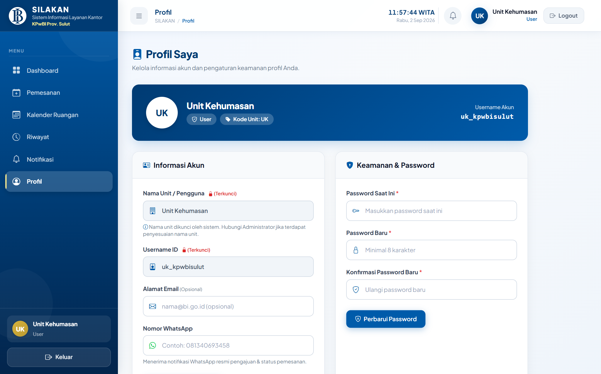
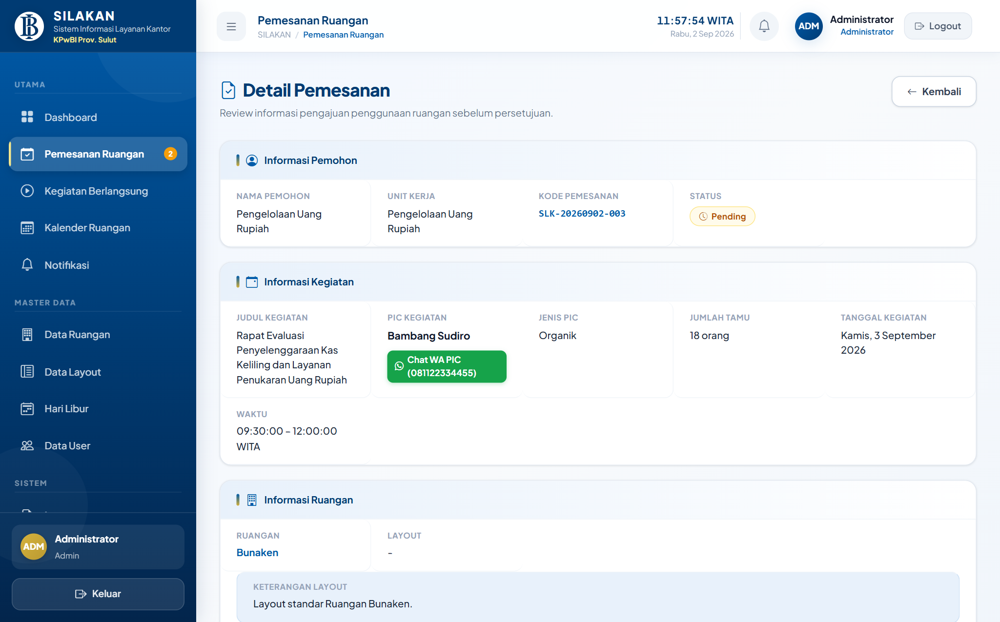
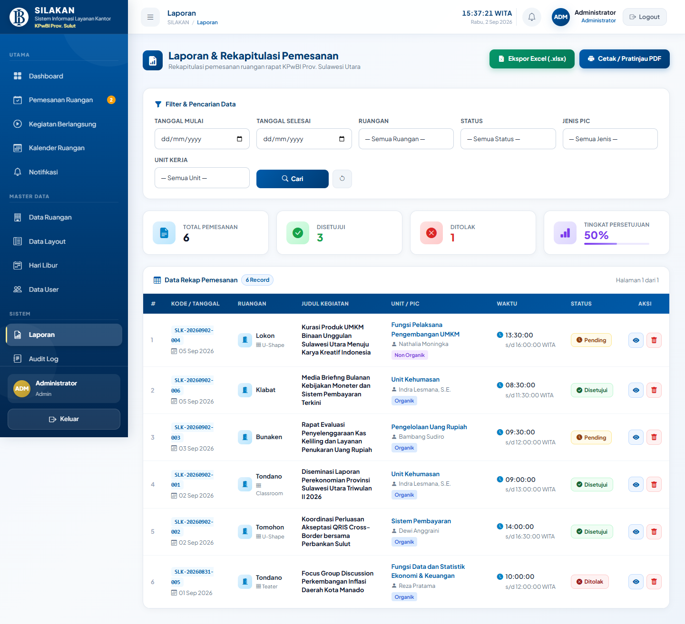
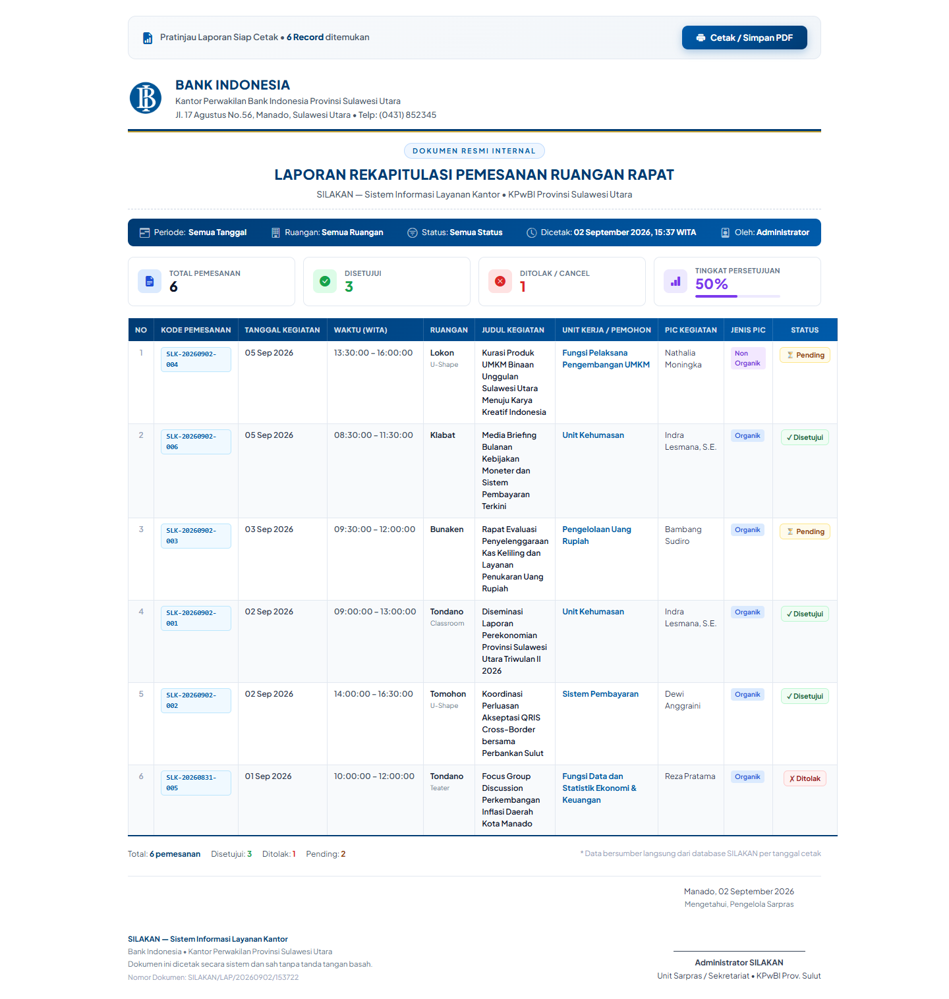
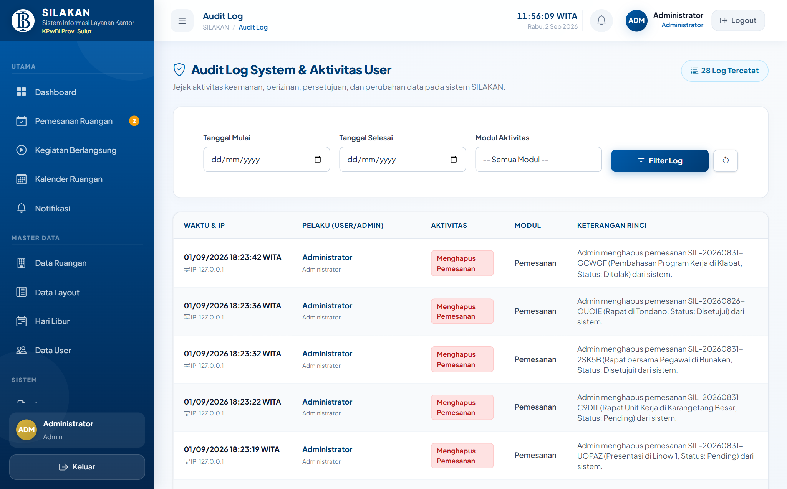
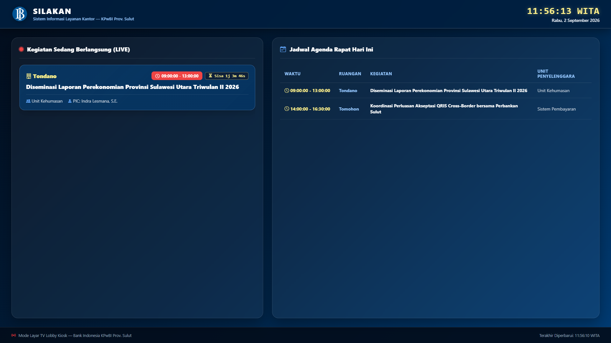

MANUAL BOOK
SILAKAN
Sistem Informasi Layanan Kantor
Panduan lengkap penggunaan sistem pemesanan dan pengelolaan ruangan rapat online berbasis website — untuk seluruh pegawai Unit Kerja dan Administrator Sarpras KPwBI Provinsi Sulawesi Utara.
Daftar Isi
Gambaran Umum Sistem SILAKAN
1. Kata Pengantar
Manual Book ini merupakan dokumen resmi panduan penggunaan SILAKAN (Sistem Informasi Layanan Kantor) — aplikasi berbasis website internal yang digunakan oleh seluruh pegawai Kantor Perwakilan Bank Indonesia Provinsi Sulawesi Utara untuk mengelola pemesanan ruangan rapat secara digital, transparan, dan efisien.
Dokumen ini ditujukan kepada dua kelompok pengguna: Pegawai Unit Kerja (User) sebagai pemohon ruangan dan Administrator Sarpras sebagai pengelola dan pemberi persetujuan.
2. Tujuan Sistem
SILAKAN dirancang untuk menyelesaikan permasalahan umum dalam pengelolaan ruangan rapat kantor, yaitu:
- Eliminasi bentrok jadwal — sistem otomatis menolak pemesanan yang bersamaan pada ruangan dan jam yang sama.
- Transparansi ketersediaan — seluruh pegawai dapat melihat jadwal rapat melalui kalender visual real-time.
- Alur persetujuan digital — pemohon mengajukan online; Admin meninjau dan menyetujui/menolak dari dashboard.
- Notifikasi otomatis WhatsApp — konfirmasi status permohonan dikirim langsung ke nomor PIC.
- Informasi lobby real-time — agenda rapat aktif ditampilkan di TV Monitor Lobby kantor.
3. Peran Pengguna dalam Sistem
| Role | Username (Contoh) | Hak Akses & Fungsi Utama |
|---|---|---|
| Administrator | admin |
Kelola approval, master data ruangan, user, laporan, audit log, dan seluruh konfigurasi sistem. |
| User Unit Kerja | uk_kpwbisulut |
Membuat pemesanan, memantau status, melihat kalender, mengunduh disposisi, pembatalan, early release. |
4. Cara Mengakses & Menjalankan Sistem
Buka aplikasi XAMPP Control Panel, lalu klik tombol Start di baris MySQL. Pastikan lampu status berwarna hijau dan port 3306 aktif.
Buka Command Prompt / Terminal di folder project: d:\Bank Indo\silakan\, kemudian jalankan perintah: php artisan serve. Server akan aktif di alamat http://127.0.0.1:8000.
Akses http://localhost:8000 untuk masuk ke sistem. Untuk TV Monitor Lobby, akses http://localhost:8000/display dan tekan F11 untuk layar penuh.
Login & Halaman Utama (Dashboard)
1.1 Proses Masuk ke Sistem (Login)
Buka browser dan navigasikan ke alamat http://localhost:8000. Halaman login SILAKAN akan tampil dengan antarmuka modern khas Bank Indonesia.

Ketikkan username unit kerja Anda (contoh: uk_kpwbisulut) atau alamat email yang terdaftar di sistem.
Masukkan password akun Anda. Klik ikon mata () di sisi kanan kolom untuk menampilkan/menyembunyikan password.
Tekan tombol biru MASUK. Sistem akan memverifikasi kredensial dan mengarahkan ke Dashboard sesuai role.
1.2 Dashboard Pengguna (Halaman Utama)
Setelah login berhasil, User diarahkan ke Dashboard yang menampilkan ringkasan aktivitas unit kerja secara komprehensif.

Dashboard menampilkan komponen utama berikut:
- Kartu Statistik: Total pemesanan, pemesanan disetujui, sedang berlangsung hari ini, dan pending.
- Kegiatan Hari Ini: Daftar rapat aktif unit kerja yang sedang atau akan berlangsung pada tanggal saat ini.
- Riwayat Pemesanan Terkini: 5 pemesanan terakhir beserta status masing-masing.
- Tombol Aksi Cepat: Tombol biru + Buat Pemesanan Baru untuk mengajukan pemesanan langsung dari dashboard.
Membuat Pemesanan Ruangan
Modul pemesanan ruangan adalah fitur inti sistem SILAKAN. Pengguna dapat mengajukan permohonan penggunaan ruangan rapat dengan mengisi formulir digital yang terstruktur.
2.1 Mengisi Formulir Pemesanan
Klik tombol + Buat Pemesanan Baru pada Dashboard atau menu Pemesanan Ruangan di sidebar. Isi seluruh kolom formulir dengan informasi yang tepat.


| Kolom Formulir | Wajib | Keterangan Pengisian |
|---|---|---|
| Ruangan Rapat | ✅ | Pilih salah satu dari 11 ruangan tersedia (Tondano, Bunaken, Tomohon, Klabat, Karangetang Besar/Kecil, Linow 1/2, Lokon, Mahawu, Remboken). |
| Layout Ruangan | — | Pilih tata letak (U-Shape, Classroom, Teater, Round Table). Ruangan dengan meja permanen otomatis tidak menampilkan pilihan layout. |
| Tanggal Kegiatan | ✅ | Tanggal pelaksanaan rapat. Sistem menolak tanggal merah (hari libur nasional). |
| Waktu Mulai & Selesai | ✅ | Jam dalam zona waktu WITA. Sistem validasi jika ada bentrok dengan pemesanan lain yang sudah disetujui. |
| Judul Kegiatan | ✅ | Nama agenda/acara yang akan dilaksanakan di ruangan tersebut. |
| Nama PIC & Jenis PIC | ✅ | Penanggung jawab kegiatan dan kategorinya: Organik (pegawai tetap BI) atau Non Organik (pegawai alih daya). |
| No. WhatsApp PIC | ✅ | Nomor WA aktif untuk menerima notifikasi persetujuan/penolakan secara otomatis (contoh: 081234567890). |
| Jumlah Tamu | ✅ | Estimasi jumlah peserta. Tidak boleh melebihi kapasitas maksimum ruangan yang dipilih. |
| Upload Disposisi | — | Lampirkan nota dinas atau memo pimpinan (format: PDF, JPG, PNG, maks. 5 MB). |
Riwayat & Status Pemesanan
3.1 Memantau Status Pemesanan
Buka menu Riwayat Pemesanan di sidebar kiri untuk melihat seluruh histori pengajuan unit kerja Anda beserta status terkini masing-masing.

3.2 Arti Badge Status Pemesanan
| Status | Arti | Tindakan Selanjutnya |
|---|---|---|
| PENDING | Pengajuan sedang dalam antrean untuk ditinjau oleh Administrator Sarpras. | Tunggu notifikasi WhatsApp dari Admin. Anda boleh membatalkan selama masih Pending. |
| DISETUJUI | Pemesanan resmi disetujui. Ruangan terkunci untuk unit Anda pada jadwal tersebut. | Rapat tampil di TV Lobby. Anda bisa melakukan Early Release jika rapat selesai lebih awal. |
| SELESAI | Kegiatan rapat telah selesai berlangsung (otomatis diarsipkan atau diselesaikan lebih awal). | Riwayat tersimpan permanen untuk audit dan laporan. Ruangan telah kembali kosong dan tersedia. |
| DITOLAK | Pemesanan ditolak oleh Admin disertai alasan tertulis. | Baca alasan penolakan di halaman Detail, lalu ajukan ulang dengan perbaikan yang diperlukan. |
| CANCEL | Pemesanan dibatalkan oleh pemohon atau oleh sistem karena tanggal sudah terlewat. | Tidak ada tindakan lebih lanjut. Ruangan kembali tersedia untuk unit lain. |
3.3 Detail Pemesanan, Pembatalan & Early Release
Klik tombol Detail pada setiap baris di halaman Riwayat untuk melihat informasi lengkap pemesanan, berkas disposisi yang diunggah, dan riwayat perubahan status.

Kalender Ruangan & Notifikasi
4.1 Kalender Ruangan Interaktif
Buka menu Kalender Ruangan untuk melihat peta visual ketersediaan seluruh ruangan rapat. Kalender difilter per ruangan dan menampilkan seluruh jadwal yang telah disetujui Admin.

Kode warna pada kalender:
- 🟦 Biru — Jadwal rapat yang sudah disetujui (klik untuk melihat rincian acara)
- 🟥 Merah — Hari Libur Nasional (tidak bisa dipesan)
- 🟨 Kuning — Cuti Bersama
- 🔷 Biru Muda — Hari Libur Khusus Bank Indonesia


Profil Pengguna & Ubah Password
5.1 Mengubah Informasi Profil & Kata Sandi
Klik nama pengguna di pojok kiri bawah sidebar atau di header halaman, lalu pilih menu Profil. Anda dapat memperbarui nama tampilan, alamat email, nomor telepon kontak, serta mengubah kata sandi akun.
Dashboard Analitik Administrator
Setelah login dengan akun Administrator (admin), halaman utama menampilkan Dashboard Analitik Eksekutif yang dirancang untuk memberikan gambaran menyeluruh tentang penggunaan ruangan rapat di KPwBI Sulut.

6.1 Komponen Dashboard Administrator
| Komponen | Informasi yang Disajikan |
|---|---|
| Kartu Statistik Utama | Total pemesanan hari ini, total disetujui, pending, ditolak, serta kegiatan aktif saat ini. |
| Grafik Tren 6 Bulan | Tren pemesanan bulanan dalam 6 bulan terakhir dalam bentuk grafik garis interaktif. |
| Diagram Ruangan Terpopuler | Bar chart atau donut chart yang menampilkan ruangan mana yang paling sering dipesan. |
| Antrean Approval Terkini | Daftar pemesanan berstatus Pending yang menunggu keputusan Admin, dengan tombol aksi cepat. |
| Kegiatan Berlangsung Hari Ini | Daftar rapat yang sedang aktif saat ini beserta countdown timer waktu tersisa. |
Manajemen Persetujuan (Approval)
Fitur Approval merupakan jantung dari sistem SILAKAN — setiap pengajuan pemesanan oleh User harus melalui proses persetujuan oleh Administrator sebelum ruangan resmi terkunci.
7.1 Daftar Pemesanan Masuk (Inbox Approval)
Buka menu Pemesanan Ruangan pada sidebar Admin. Tab Pending menampilkan seluruh pengajuan yang belum ditindaklanjuti, diurutkan dari yang terlama menunggu.

7.2 Mereview & Mengambil Keputusan
Klik tombol Review Approval pada baris pemesanan yang ingin ditinjau. Halaman detail menampilkan seluruh informasi pemesanan, termasuk berkas disposisi yang dilampirkan pemohon.


| Aksi | Prosedur | Dampak pada Sistem |
|---|---|---|
| ✅ Setujui | Klik tombol hijau "Setujui Pemesanan". Tidak diperlukan input tambahan. | Status → Disetujui. Jadwal terkunci di kalender. Agenda tayang di TV Lobby. WhatsApp konfirmasi terkirim ke PIC. |
| ❌ Tolak | Klik tombol merah "Tolak Pemesanan", ketik alasan penolakan yang jelas pada kolom modal pop-up, klik "Kirim Penolakan". | Status → Ditolak. Alasan terkirim via WhatsApp ke PIC pemohon. Ruangan kembali tersedia. |
7.3 Penjadwalan Rapat Mandiri oleh Administrator
Administrator dapat menjadwalkan rapat secara langsung tanpa antrean persetujuan melalui tombol "+ Tambah Rapat" pada header Dashboard Admin maupun halaman Pemesanan Ruangan:
- Otomatis Disetujui: Rapat seketika berstatus Disetujui dan langsung aktif di kalender ruangan serta layar monitor TV Lobby.
- Pilihan Penyelenggara: Admin dapat menjadwalkan atas nama Administrator maupun memilih Unit Kerja terkait.
- Disposisi Opsional: Unggah nota dinas/disposisi bersifat opsional bagi Administrator.
Live Monitoring Kegiatan Berlangsung
Menu Kegiatan Berlangsung memberikan tampilan real-time tentang ruangan mana yang sedang aktif digunakan saat ini, lengkap dengan countdown timer sisa waktu penggunaan.

Fitur yang tersedia di halaman Kegiatan Berlangsung:
- Countdown Timer Per-Rapat — menampilkan sisa durasi dalam format
HH:MM:SS, diperbarui setiap detik tanpa reload halaman. - Informasi Lengkap Setiap Rapat — nama ruangan, judul kegiatan, unit kerja, PIC, jam mulai/selesai.
- Tombol Early Release — Admin dapat mengakhiri rapat lebih awal dari halaman ini langsung.
Master Data
9.1 Manajemen Ruangan & Layout


Pada menu Data Ruangan, Admin dapat menambah ruangan baru, mengubah kapasitas (jumlah orang), mengaktifkan/menonaktifkan ketersediaan, dan mencentang layout mana yang diizinkan. Pada menu Data Layout, Admin mengelola opsi tata letak yang tersedia untuk dipilih oleh pemohon.
9.2 Manajemen Hari Libur & Sinkronisasi Nasional
Buka menu Hari Libur untuk mengelola tanggal yang dikecualikan dari pemesanan. Klik tombol biru "Sync API Libur Nasional" untuk mengunduh otomatis seluruh tanggal merah resmi pemerintah tahun berjalan dari API publik.

Tipe hari libur yang dapat dikelola:
- Libur Nasional (ditandai merah di kalender) — hari resmi pemerintah seperti Idul Fitri, Natal, HUT RI, dll.
- Cuti Bersama (ditandai kuning) — cuti bersama nasional yang ditetapkan pemerintah.
- Libur Khusus BI (ditandai biru muda) — hari libur internal Bank Indonesia.
9.3 Manajemen Akun User & Pemisahan Akun Administrator
Buka menu Data User untuk mengelola seluruh akun pengguna. Halaman ini dibagi menjadi dua bagian terpisah:
- Kotak Akun Administrator (Bagian Atas): Menampilkan profil akun Administrator yang dilindungi sistem. Akun ini tidak dapat dihapus dan role administrator dikunci permanen demi integritas dan keamanan sistem.
- Daftar Akun Unit Kerja (Bagian Bawah): Menampilkan tabel akun seluruh unit kerja. Dilengkapi fitur Lihat Password (ikon mata dan tombol salin ) agar Admin dapat mengamati dan menyalin password akun unit kerja secara transparan.
| Fungsi | Cara Penggunaan |
|---|---|
| Tambah User Baru | Klik tombol "+ Tambah User", isi nama unit, username, kode unit, dan password awal. Tentukan role (User atau Admin). |
| Lihat & Salin Password | Klik ikon mata () pada kolom Password Akun untuk menampilkan teks kata sandi, lalu klik ikon salin () untuk mencopy password. |
| Edit Data User | Klik tombol Edit pada baris user yang ingin diperbarui. Ubah nama, username, kode unit, atau perbarui password bila diperlukan. |
| Hapus Akun User | Klik tombol Hapus pada unit kerja. Catatan: Akun admin dilindungi dan tidak dapat dihapus. User yang memiliki riwayat pemesanan juga dilindungi untuk kebutuhan audit. |
Laporan, Ekspor Excel & Cetak PDF
Menu Laporan menyediakan rekapitulasi komprehensif seluruh data pemesanan ruangan dengan kemampuan filter, ekspor spreadsheet, dan cetak dokumen resmi ber-KOP Bank Indonesia.
10.1 Halaman Filter & Rekapitulasi Laporan

Tersedia 6 parameter filter yang dapat dikombinasikan:
- Tanggal Mulai & Selesai — saring berdasarkan rentang tanggal kegiatan.
- Ruangan — tampilkan data untuk ruangan tertentu saja.
- Status — saring berdasarkan status (Disetujui, Pending, Ditolak, Cancel).
- Jenis PIC — pisahkan data kegiatan Organik dan Non-Organik.
- Unit Kerja — lihat laporan spesifik untuk unit kerja tertentu.
Dashboard laporan juga menampilkan 4 Kartu Metrik secara real-time: Total Pemesanan, Disetujui, Ditolak, dan Tingkat Persetujuan (%) dengan progress bar visual.
10.2 Ekspor Excel (.xlsx)
Klik tombol hijau "Ekspor Excel (.xlsx)" di bagian atas halaman. File spreadsheet berisi seluruh data yang sesuai dengan filter aktif, siap dibuka di Microsoft Excel atau LibreOffice Calc.
10.3 Cetak Laporan & PDF Resmi KOP Bank Indonesia
Klik tombol biru "Cetak / Pratinjau PDF" untuk membuka halaman pratinjau cetak. Dokumen menampilkan KOP resmi Bank Indonesia, tabel data lengkap 10 kolom, summary cards, dan blok tanda tangan.

Audit Log & Jejak Aktivitas Sistem
Menu Audit Log menyimpan jejak digital seluruh aktivitas penting yang terjadi di dalam sistem — siapa melakukan apa, kapan, dan dari mana — untuk keperluan keamanan dan akuntabilitas.

Setiap entri audit log mencatat: Timestamp (tanggal & jam), Pengguna (siapa yang melakukan aksi), Jenis Aktivitas (Login, Buat Pemesanan, Setujui, Tolak, dll.), Data yang Berubah, dan Alamat IP. Audit log bersifat hanya baca — tidak dapat diubah atau dihapus oleh siapapun.
TV Monitor Lobby (Kiosk Display)
SILAKAN menyediakan tampilan khusus untuk Smart TV atau monitor di lobby kantor yang menampilkan jadwal rapat aktif hari ini secara otomatis dan real-time.

Cara Mengaktifkan TV Monitor Lobby:
Pada browser Smart TV atau Mini PC yang terhubung ke TV Lobby, akses: http://localhost:8000/display
Tekan tombol F11 pada keyboard untuk masuk ke mode full screen (layar penuh). Semua UI browser akan tersembunyi.
Layar TV otomatis memperbarui data setiap 30 detik tanpa kedip (zero-flicker). Ruangan terisi berwarna merah, kosong berwarna hijau. Jam digital WITA berdetak real-time di bagian atas.
Daftar 11 Ruangan Rapat KPwBI Sulut
| No | Nama Ruangan | Kapasitas | Keterangan Layout & Catatan |
|---|---|---|---|
| 1 | Tondano / Balai Kerapuan | 50+ | Layout fleksibel (U-Shape, Classroom, Teater, Round Table). Ruangan terbesar. |
| 2 | Bunaken | 30 | Meja permanen (tidak ada pilihan layout khusus). Ruang rapat formal. |
| 3 | Tomohon | 20 | Layout fleksibel. Cocok untuk rapat sedang. |
| 4 | Klabat | 20 | Layout fleksibel. Ruang rapat standar. |
| 5 | Karangetang Besar | 15 | Layout fleksibel. Ruang diskusi kapasitas sedang. |
| 6 | Karangetang Kecil | 8 | Layout terbatas. Cocok untuk rapat kecil/bilateral. |
| 7 | Linow 1 | 12 | Layout fleksibel. Ruang diskusi. |
| 8 | Linow 2 | 12 | Layout fleksibel. Ruang diskusi. |
| 9 | Lokon | 20 | Layout fleksibel. Ruang rapat lantai atas. |
| 10 | Mahawu | 15 | Layout fleksibel. |
| 11 | Remboken | 10 | Meja permanen. Ruang rapat kecil. |
Alur Proses Pemesanan Ruangan
Login
Pemesanan
PENDING
Review
DISETUJUI ✓
(WA ke PIC)
(WA ke PIC)
DITOLAK ✗
TV Lobby
Berlangsung
di Kalender
Panduan Troubleshooting & FAQ
Masalah yang Sering Ditemui & Solusinya
| Masalah / Gejala | Kemungkinan Penyebab & Solusi |
|---|---|
| "Jadwal Bentrok" saat mengisi form pemesanan | Ruangan yang dipilih sudah memiliki pemesanan yang disetujui pada jam yang sama. Ganti jam mulai/selesai atau pilih ruangan lain yang kosong pada jam tersebut. |
| "Kapasitas Melebihi Batas" saat input jumlah tamu | Jumlah peserta yang diinput melebihi kapasitas maksimum ruangan. Kurangi jumlah peserta atau pilih ruangan yang lebih besar (mis: Balai Kerapuan/Tondano). |
| Layout tidak muncul / tertulis "Tidak Ada Layout Khusus" | Normal untuk ruangan dengan susunan meja permanen (seperti Bunaken, Remboken). Lanjutkan pengisian tanpa pilih layout. |
| File disposisi gagal diunggah | Ukuran file melebihi batas 5 MB, atau format file tidak didukung. Kompres ukuran file atau ubah ke format PDF/JPG sebelum diunggah ulang. |
| Tidak menerima notifikasi WhatsApp | Pastikan nomor WhatsApp yang diinput saat pemesanan aktif dan format benar (awali dengan 08 atau +628, tanpa spasi/tanda hubung). Hubungi Admin jika masalah berlanjut. |
| Lupa kata sandi akun | Hubungi Administrator Sarpras untuk reset password melalui menu Data User → tombol Edit → isi field password baru. |
| TV Lobby tidak menampilkan jadwal terbaru | Refresh halaman browser di TV (F5), atau pastikan koneksi LAN ke server aplikasi stabil. Data seharusnya otomatis diperbarui setiap 30 detik. |
| Aplikasi tidak bisa diakses di browser | (1) Pastikan MySQL XAMPP sudah aktif (lampu hijau). (2) Pastikan perintah php artisan serve sedang berjalan di Command Prompt. (3) Akses melalui http://localhost:8000 bukan https://. |
Kontak & Pusat Bantuan
Unit: Unit Rumah Tangga & Logistik / Sekretariat — KPwBI Prov. Sulawesi Utara
Lokasi: Gedung KPwBI Sulut, Lantai 2, Jl. 17 Agustus No. 56, Manado
Email:
sarpras_kpwbisulut@bi.go.idExt. Telepon Internal: 8200 / 8201
BANK INDONESIA
Kantor Perwakilan Provinsi Sulawesi Utara
Manual Book SILAKAN v1.0 • September 2026 • Dokumen Resmi Internal
Dokumen ini diterbitkan untuk keperluan internal KPwBI Prov. Sulawesi Utara.
Dilarang memperbanyak atau mendistribusikan tanpa izin tertulis dari unit pengelola.